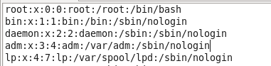
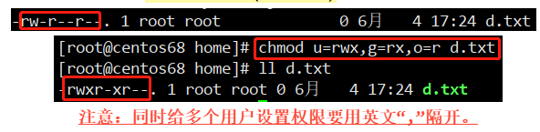
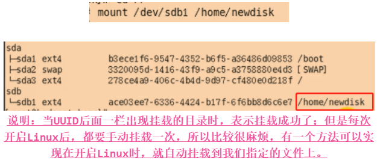

Linux–学习笔记(包含Linux视频)
Lesson1 Linux概述
NO1.1 Linux简介
Linux是一个多用户、多任务的操作系统。与Windows不同之处在于，Linux是一套开放源代码程序的、可以自由传播的类Unix操作系统软件。
- Linux系统主要被应用于服务器端、嵌入式开发和PC桌面三大领域，其中服务器端领域是重中之重。如，我们熟知的百度、腾讯、Sina、阿里等，都在使用Linux系统作为其服务器端的程序运行平台，全球及国内排名前1000的90%以上的网站使用的主流系统都是Linux系统。
- Linux是一个类似Unix的操作系统，也就是说，Linux源于Unix。Unix要早于Linux，Linux的初衷就是要替代 UNIX，并在功能和用户体验上进行优化，所以Linux模仿了UNIX(但并没有抄袭UNIX的源码)，使得Linux在外观和交互上与UNIX非常类似。相比于UNIX，Linux最大的创新是开源免费，这是它能够蓬勃发展的最重要原因；而目前的UNIX大部分都是收费的，小公司和个人都难以承受。
- Linux的特点：
- 有大量的可用软件及免费软件。如，声名赫赫的Apache、Samba、PHP、MySQL等，构建成本低廉，是Linux被众多企业青睐的原因之一；
- 具备良好的可移植性及灵活性。Linux系统有良好的可移植性，它几乎支持所有的CPU平台；
- 优良的稳定性和安全性。Linux开放源代码，将所有代码放在网上，全世界的程序员都看得到，有什么缺陷和漏洞，很快就会被发现，从而成就了它的稳定性和安全注；
- 支持几乎所有的网络协议及开发语言。
- Linux的发行版本大体可以分为两类：
- 商业公司维护的发行版本，以著名的Red Hat为代表；
- 社区组织维护的发行版本，以Debian为代表。
- 常用的Linux发行版本：
- Red Hat Linux：Red Hat(红帽公司)创建于1993年，是目前世界上资深的Linux厂商，也是最获认可的Linux品牌。Red Hat公司的产品主要包括RHEL(Red Hat Enterprise Linux，收费版本)和CentOS(RHEL的社区克隆版本，免费版本)、Fedora Core(由Red Hat桌面版发展而来，免费版本)；
- Ubuntu Linux：Ubuntu基于知名的Debian Linux发展而来，界面友好，容易上手，对硬件的支持非常全面，是目前最适合做桌面系统的 Linux 发行版本，而且Ubuntu的所有发行版本都免费提供；
- SuSE Linux：SuSE Linux以Slackware Linux为基础，原来是德国的SuSE Linux AG公司发布的Linux版本，早期只有商业版本，2004年被 Novell公司收购后，成立了OpenSUSE 社区，推出了自己的社区版本OpenSUSE；SuSE Linux在欧洲较为流行。SuSE Linux可以非常方便地实现与Windows的交互，硬件检测非常优秀，拥有界面友好的安装过程、图形管理工具，对于终端用户和管理员来说使用非常方便；
- 其他Linux发行版。
- 发行版本的选择使用：
- 如果你需要的是一个服务器系统，而且已经厌烦了各种Linux的配置，只是想要一个比较稳定的服务器系统，那么建议你选择CentOS或RHEL；
- 如果你只是需要一个桌面系统，而且既不想使用盗版，又不想花大价钱购买商业软件，不想自己定制，也不想在系统上浪费太多时间，则可以选择Ubuntu。
NO1.2 安装VM和Linux，以及配置Linux
这里使用VM12虚拟机来安装Linux(CentOS 6.8/7.x均可)系统。
安装完成VM12之后，将CentOS 6.8/7.x安装到VM12上，这两步安装的步骤只要按照具体的安装视频或者安装文档来安装即可，这里不做过多的描述。
终端的使用：在进入Linux6.8/7.x之后，右键鼠标，选择“在终端中打开”即可；
网络的连接：在Linux界面的右上角点击网络图标，选择“System eth0”，就会自动连接网络了。
VMTools的安装和使用，该工具用于共享主机和虚拟机之间的文件，说白了就是本机和虚拟机之间能够进行复制和粘贴。
点击VM12的菜单栏，选择安装VMTools选项即可；
点击Linux中的计算机，双击第一个，这时就会出现VMTools的安装包，是一个xxx.tar.gz格式的文件；
将这个安装包复制到opt文件夹下，这个文件夹一般是我们用户自己安装软件的常用文件夹；
打开终端，输入命令：./vmware-install.pl，一路回车即可。
- 本机和虚拟机之间的共享文件夹设置。
- 虚拟机菜单栏里是选择设置，选择选项一栏，启用共享文件，并添加本机上要共享的文件夹；
- 该文件夹在虚拟机的地址为：计算机/文件系统/mnt/hgfs/。
NO1.3 Linux文件目录结构
Linux的根目录是“/”，有且只有这一个根目录。
- Linux的文件目录结构(即以下文件夹都是在“/”根目录下)。
bin：存放系统命令，普通用户和 root 都可以执行。放在 /bin 下的命令在单用户模式下也可以执行；boot：系统启动目录，保存与系统启动相关的文件，如，内核文件和启动引导程序(grub)文件等；dev：设备文件保存位置；etc：配置文件保存位置。系统内所有采用默认安装方式(rpm 安装)的服务配置文件全部保存在此目录中。如，用户信息、服务的启动脚本、常用服务的配置文件等；home：普通用户的主目录(也称为家目录)。在创建用户时，每个用户要有一个默认登录和保存自己数据的位置，就是用户的主目录，所有普通用户的主目录是在/home/下建立一个和用户名相同的目录。如，用户liming的主目录就是/home/liming；lib：系统调用的函数库保存位置；media：挂载目录。系统建议用来挂载媒体设备。如，软盘和光盘；mnt：挂载目录。早期Linux中只有这一个挂载目录，并没有细分。系统建议这个目录用来挂载额外的设备。如，U盘、移动硬盘和其他操作系统的分区；misc：挂载目录。系统建议用来挂载 NFS 服务的共享目录。虽然系统准备了三个默认挂载目录 /media/、/mnt/、/misc/，但是到底在哪个目录中挂载什么设备可以由管理员自己决定。如，我在接触 Linux 的时候，默认挂载目录只有 /mnt/，所以养成了在 /mnt/ 下建立不同目录挂载不同设备的习惯，如 /mnt/cdrom/ 挂载光盘、/mnt/usb/ 挂载 U 盘，都是可以的；opt：第三方安装的软件保存位置。这个目录是放置和安装其他软件的位置，手工安装的源码包软件都可以安装到这个目录中。不过我还是习惯把软件放到 /usr/local/ 目录中，也就是说，/usr/local/ 目录也可以用来安装软件；root：系统管理员的的主目录。普通用户主目录在/home/下，系统管理员的主目录直接在“/”下；sbin：保存与系统环境设置相关的命令，只有root可以使用这些命令进行系统环境设置，但也有些命令可以允许普通用户查看；srv：服务数据目录。一些系统服务启动之后，可以在这个目录中保存所需要的数据；tmp：临时目录。系统存放临时文件的目录，在该目录下，所有用户都可以访问和写入。建议此目录中不能保存重要数据，最好每次开机都把该目录清空；usr：这是一个非常重要的目录，用户的很多应用程序和文件都放在这个目录下，类似于windows下的program files目录；usr/local：手工安装的软件保存位置。这也是常用于安装软件的位置。
var：目录用于存储动态数据，例如缓存、日志文件、软件运行过程中产生的文件等。
- Linux是以文件的形式管理我们的设备的，换句话说，就是Linux系统中，一切皆文件，无论是CPU，还是别的什么设备，都是以文件的形式进行存储。
NO1.4 Linux远程登录与文件传输
我们常常需要使用Linux，但是有时候Linux系统并不在本机，而是在其他专门的用于服务器的电脑上，那么这个时候我们就需要远程登录Linux，然后进行文件的上传和下载了。
Linux远程登录：XShell。Xshell是Windows下一款功能非常强大的安全终端模拟软件，支持Telnet、Rlogin、SSH、SFTP、Serial 等协议，可以非常方便的对linux主机进行远程管理。安装步骤如下：
直接下载并安装XShell5即可；
打开XShell5，并进行连接配置，如下图所示：
连接配置完成后，就可以开始连接了；连接时会提示你输入Linux系统的用户名和密码，说白了就是我用什么身份去登录这个Linux，之前安装Linux系统的时候设置过了的，而账户默认大家都是root，密码则是自己设置的密码，输入完成后就可以登录。
Linux文件传输：XFTP。这是一个基于MS windows平台的功能强大的SFTP、FTP文件传输软件。使用了Xftp以后，MS windows用户能安全地在UNIX/Linux和Windows PC之间传输文件。注意：该软件需要Linux主机开启了sshd服务，该服务的作用就是能够让别的电脑和Linux主机建立连接并进行文件传输；在Linux主机是使用命令查看sshd服务是否已开启：service sshd status，如果是正在运行，那么就表示已开启，否则就是没有开启。该服务监听的端口号为22。
安装步骤比较简单，就不详述了；
配置XFTP，即配置连接Linux：安装完成后，打开XFTP，在左上角的菜单栏中找到“打开”，就会出现名为“会话”的对话框，点击新建，如下图所示；
上面描述的步骤都操作完成了，那么XFTP就配置完成，可以使用了。
Lesson2 Linux基础
NO2.1 vi和vim的使用
所有的类Unix系统都会内建vi文本编辑器，也就是说vi是一个文书编辑器。而vim是从vi发展出来的一个文本编辑器。代码补充、编译及错误跳转等方便编程的功能特别丰富，在程序员中被广泛使用。
简单的来说，vi是老式的字处理器，不过功能已经很齐全了，但是还是有可以进步的地方。vim则可以说是程序开发者的一项很好用的工具。vi/vim 有三种模式，分别是正常模式(Command mode)、编辑模式(Insert mode)和命令行模式(Last line mode)。这三种模式的作用分别是：
正常模式：用户刚刚启动vi/vim，即使用“vim 文件名称”，便进入了正常模式。此状态下敲击键盘动作会被vim识别为命令，而非输入字符。如，我们此时按下i，并不会输入一个字符，i被当作了一个命令；以下是常用的几个命令：
i命令：切换到编辑模式，以输入字符；x命令：删除当前光标所在处的字符；:命令：切换到命令行模式，以在最底一行输入命令。
编辑模式：在正常模式下按下i就进入了编辑模式。在输入模式中，可以使用以下按键：
HOME/END：移动光标到行首/行尾；Page Up/Page Down：上/下翻页；Insert：切换光标为输入/替换模式；ESC：退出编辑模式，切换到正常模式。
命令行模式：在编辑模式下按下:(即英文冒号)就进入了命令行模式。命令行模式可以输入单个或多个字符的命令，可用的命令非常多。在命令行模式中，基本的命令有：注意：按ESC键可随时退出命令行模式。
:q命令：(查看文件后，没有修改)退出程序；- :
q!命令：表示不保存修改部分，并退出； :wq命令：表示保存修改部分，并退出。
- :
:w命令：仅做保存文件的操作，不做退出文件的操作。
- vi/vim的快捷键：
yy：需要在正常模式中使用，作用是拷贝光标所在的当前行，随后按p粘贴；dd：需要在正常模式中使用，作用是删除光标所在的当前行；gg/G：需要在正常模式中使用，作用是快速跳转到首行/最后一行；u：需要在正常模式中使用，作用是撤销上一次保存的所有操作，但是在使用“:wq”之后，使用该命令无法撤销；行号 shift+g：需要在正常模式中使用，作用是跳转到指定行；行数+enter：需要在正常模式中使用，作用是跳转到从当前行开始+指定行数。如，光标在第2行，转换到正常模式中，输入3，再按enter键，就会跳到第5行；:/：需要在命令行模式中使用，作用是查找，格式为：“:/要查找的单词”，按n跳转到下一个查找到的关键字；:set nu/:set nonu：需要在命令行模式中使用，作用是显示行号/不显示行号。
NO2.2 重启、关机和用户登录注销
关机、重启和用户的登录与注销，这些都是我们Linux用户常用的命令。
- 关机和重启命令：
- 关机命令：
shutdown -h now：表示立即关机；shutdown -h 1：表示1分钟后关机；halt：立即关机。
- 重启命令：
reboot：立即重启系统；shutdown -r now：表示立即重启。
- 保存命令：
sync：把内存的数据保存到磁盘，简单讲，就是保存数据的意思，建议关机或重启之前都使用以下该命令。
- 关机命令：
- 用户的登录与注销：我们常常不使用root用户进行登录并操作Linux，因为root是最大权限的管理者，可能因为不小心的错误导致系统异常，所以我们一般会使用权限较低的用户登录和操作。
- 用户注销(退出)：使用命令logout即可，表示退出当前登录的用户。
NO2.3 用户管理
Linux系统是一个多用户、多任务的分时操作系统，任何一个要使用系统资源的用户，都必须首先向系统管理员申请一个账号，然后以这个账号的身份进入系统。换句话说，Linux系统支持多个用户在同一时间内登陆，不同用户可以执行不同的任务，并且互不影响。
- 用户和用户组：
- 用户：每个用户都拥有唯一的用户名和各自的口令；
- 用户组：是具有相同特征用户的集合。简单的理解，就是有时我们需要让多个用户具有相同的权限。如，查看、修改某一个文件的权限等等，如果有10个用户的话，就需要授权10次，那如果有100、1000甚至更多的用户呢？显然，这种方法不太合理。最好的方式是建立一个组，让这个组具有查看、修改此文件的权限，然后将所有需要访问此文件的用户放入这个组中，那么，所有用户就具有了和组一样的权限，这就是用户组。
linux系统用户角色的划分：Linux系统中，每个用户的ID细分为两种，分别是用户ID(User ID，简称UID)和组ID(Group ID，简称GID)，也就是说其实Linux并不认识你的用户名称，它只认识用户名对应的ID号(也就是一串数字)；Linux系统将所有用户的用户名与ID的对应关系都存储在 /etc/passwd文件中。每个文件都有自己的UID和GID。用户的划分：
超级用户：默认是root用户，其UID和GID均为0。在每台unix/linux操作系统中都是唯一且真实存在的，通过它可以登录系统，可以操作系统中任何文件和命令，拥有最高的管理权限。在生产环境，一般禁止root账号远程登录SSH连接服务器，以加强系统安全；
程序用户：UID范围为1~499。与真实的普通用户区分开来，这类用户最大特点是安装系统后默认就会存在，且默认情况大多数不能登陆系统，其在/etc/passwd文件中，最后字段为/sbin/nologin的都是程序用户。但是，他们是系统正常运行不可缺少的，他们的主要是方便系统管理，满足相应的系统进程对文件属主的要求。如，默认的bin，adm，nobody，mail用户等等。服务的运行需要用户角色，可以不用登陆。如，当我们需要运行MySQL数据库时，可以创建一个虚拟用户，作为运行MySQL服务的角色；

普通用户：UID范围为500~65535。这类用户一般是由超级用户(即root用户)进行添加。
用户的添加、删除、修改与查询。
注意：用户的信息都放在了/etc/passwd文件中；每行的含义是：用户名:口令:用户ID号:组ID号:注视性描述:主目录:登录Shell。添加：
useradd [选项] 用户名。其中[选项]如下；通常情况下，根本不需要手工指定任何内容，因为使用默认值就可以满足我们的要求；-u UID：手工指定用户的UID，但是UID的范围不要小于500；-d 主目录：手工指定用户的主目录。主目录必须写绝对路径，而且如果需要手工指定主目录，则一定要注意权限；-c 用户说明：手工指定/etc/passwd文件中各用户信息中第5个字段的描述性内容，可随意配置；-g 组名：手工指定用户的初始组。一般以和用户名相同的组作为用户的初始组，在创建用户时会默认建立初始组。一旦手动指定，则系统将不会再创建和用户名相同的那个初始组目录；-G 组名：指定用户的附加组。我们把用户加入其他组，一般都使用附加组；-s shell：手工指定用户的登录Shell，默认是/bin/bash；-e 日期：指定用户的失效日期，格式为”YYYY-MM-DD”。也就是/etc/shadow文件的第八个字段；-o：允许创建的用户的UID可以与其他用户的UID相同。如，执行 “useradd -u 0 -o usertest” 命令建立用户 usertest，它的UID和root用户的UID相同，都是0；-m：建立用户时强制建立用户的家目录。在建立系统用户时，该选项是默认的；-r：创建系统用户，也就是UID在1~499之间，供系统程序使用的用户。由于系统用户主要用于运行系统所需服务的权限配置，因此系统用户的创建默认不会创建主目录。useradd -d /home/master dyf //这就表示创建了一个dyf用户，并指定了主目录为master，如果没有就会自动创建该主目录 拓展：为添加的用户设置密码 一、格式：passwd [选项] 用户名； 二、[选项]中的内容： 1.-l：锁定已经命名的账户名称； 2.-u：解开账户锁定状态； 3.-x, --maximum=DAYS：密码使用最大时间（天）； 4.-n, --minimum=DAYS：密码使用最小时间（天）； 5.-d：删除使用者的密码； 6.-S：检查指定使用者的密码认证种类； 7.--stdin：非交互式修改/设置密码，弊端是操作日志能查密码，用history -c 干掉。
删除：
userdel 用户名。分为两种删除：删除用户时，并不删除其关联的主目录：
userdel 用户名。工作中，删除Linux用户后，一般不会将用户所在的主目录删除掉，所以常用的一般是这个。删除用户时，也同时删除其关联的主目录：
userdel -r 用户名。如下图所示。
修改：
修改用户信息：
usermod [选项] 用户名。选项如下：-c 用户说明：修改用户的说明信息，即修改/etc/passwd文件目标用户信息的第5个字段；-d 主目录：修改用户的主目录，即修改/etc/passwd文件中目标用户信息的第6个字段，需要注意的是，主目录必须写绝对路径；-e 日期：修改用户的失效曰期，格式为”YYYY-MM-DD”，即修改 /etc/shadow 文件目标用户密码信息的第8个字段；-g 组名：修改用户的初始组，即修改/etc/passwd文件目标用户信息的第4个字段(GID)；-u UID：修改用户的UID，即修改/etc/passwd文件目标用户信息的第3个字段(UID)；-G 组名：修改用户的附加组，其实就是把用户加入其他用户组，即修改/etc/group文件；-l 用户名：修改用户名称；-L：临时锁定用户(Lock)；-U：解锁用户(Unlock)，和-L对应；-s shell：修改用户的登录 Shell，默认是/bin/bash。临时切换用户的身份：
su [选项] 用户名。选项如下；注意：用户切换之后，想要切换回原先的用户，使用exit即可，退回到原先的用户。-：当前用户不仅切换为指定用户的身份，同时所用的工作环境也切换为此用户的环境(包括PATH变量、MAIL变量等)。使用“-”选项可省略用户名，默认会切换为root用户；-l：同 - 的使用类似，也就是在切换用户身份的同时，完整切换工作环境，但后面需要添加欲切换的使用者账号；-p：表示切换为指定用户的身份，但不改变当前的工作环境(不使用切换用户的配置文件)；-m：和-p命令一样；-c：仅切换用户执行一次命令，执行后自动切换回来，该选项后通常会带有要执行的命令。
查询：
查询指定用户的信息：
id 用户名；查询当前用户：
打印当前执行操作的用户名：
whoami；打印登陆当前Linux系统的用户名：
who am i。
用户组的管理。
注意：用户组的信息都放在了/etc/group文件里；每行的含义是：组名:口令:组ID号:组内的用户。用户组的添加：
groupadd [选项] 组名。-g GID：指定组的ID；-r：创建系统群组。
用户组的删除：
groupdel 组名。用户组的修改：
groupmod [选项] 组名。选项如下：-g GID：修改组ID；-n 新组名：修改组名。
NO2.4 运行级别和Root密码找回
Linux的运行级别有7个。
Linux的7个运行级别；
注意：Linux运行级别的配置文件为/etc/inittab。0：关机；1：单用户模式，可以想象为Windows的安全模式，主要用于系统修复；单用户模式不需要密码就可以登录，所以一般会用来找回root密码；2：无网络支持的多用户模式；3：有网络支持的多用户模式(文本模式，工作中最常用的模式)；4：保留，未使用；5：图形界面；6: 重启。
- 改变当前的运行级别：
init 运行级别。如，从图像界面5转换到命令行界面3，使用命令：init 3。
如果我们不小心忘记了root密码，无法登陆Linux，怎么把呢？方法：可以让linux通过进入单用户模式来重置root密码命令。
在Linux开机读秒时按任意键进入grub菜单；
根据提示，按e进入编辑界面；
选择第二项：内核，继续按e编辑；
结尾输入：
[空格] 1[回车]；回到菜单界面，按b启动；
启动后就会进入到单用户模式，可以使用passwd命令直接重置root用户密码；
密码修改完成后使用reboot命令重启，系统将会重新进入之前默认的运行级别。
NO2.5 帮助类命令
如果我们不熟悉指令的用法，Linux也提供了指令的说明。
使用man获得某个指令的用法：
man 命令名称；该命令的功能是获得想要了解的指令的用法。如，man ls，表示想要知道ls这个命令的用法。使用help获得某个指令的说明：
help 命令名称；该命令用于查看指定的命令的说明。如，help cd，表示查看cd命令的说明文档。
NO2.6 文件目录类常用命令
接下来要学习的是Linux中常用的文本目录命令，这些都比较重要，因为使用的频率很高。
pwd命令：查看当前工作目录的完整路径(也就是绝对路径)；格式：pwd。
ls命令：用来打印当前目录的清单，可以指定其他目录；格式：ls [选项]。选项如下；如，ls -l t*：列出所有文件名以"t"开头的文件信息。-a：列出目录下所有的文件，包括以”.”开头的隐藏文件；-l：以列表的方式列出：文件名、文件权限、所有者、大小等详细信息；-r：反向次序排列；-t：以文件修改时间排序；-g：类似-l，但是不列出所有者；-h：以容易理解的文件格式列出。
cd命令：切换到指定的文件目录中去；格式：cd /文件目录。以下是常用的cd命令形式：cd /：进入系统根目录；cd /aa/bb/cc：跳转到指定目录；cd ~/cd：进入当前用户所属的home目录中；cd ..：跳转到上一级。
mkdir命令：用于创建目录，简单讲就是创建文件夹，但只能创建一级的目录，要是父目录不存在就会报错；格式：mkdir [选项] 要创建的目录名称。选项如下：-p：自动按需创建父目录。如，mkdir -p /home/aaa/bbb，其中aaa和bbb文件夹都不存在，要创建多级目录，就要加入-p选项；-m：创建目录时给定权限。
rmdir命令：用于删除目录，就是删除指定的文件夹，但无法删除非空文件夹，即里面有文件或文件夹则无法删除；格式：rmdir [选项] 要删除的目录名称。选项如下；注意：如果要删除的目录里有东西，使用“rm -rf 指定要删除的目录名称”，那么指定目录以及里面的东西都会一并删除。-p：删除指定目录后如果其父目录为空，则一并删除；
touch命令：用于创建一个或多个空的文件；格式：touch 文件1 文件2....。
cp命令：用于复制文件。有两种：文件到文件或目录到目录的复制，格式：
cp [选项] SOURCE DEST(如果DEST文件不存在则创建，存在则覆盖；如果DEST是目录，目录不存在则无法复制)；文件到目录的复制，格式：
cp [选项] SOURCE... DIRECTORY(DEST必须为directory，也就是目录)。两种复制的选项如下；注意：如果想要强制覆盖某个目录或某个文件，只需要在cp前面加个\即可，就不会询问用户是否覆盖了。-i：交互式复制，即覆盖前提醒用户确认；-f：强制覆盖目标文件；-r/-R：递归复制目录。
rm指令：删除文件或目录；格式：rm [选项] 要删除的文件或目录。选项如下：-f：强制删除目标文件，不提示；-r/-R：递归处理，将制定目录下的所有文件包括目录一并删除。
mv指令：有两个功能。剪切文件或目录：格式：
mv file dest；重命名文件或目录：格式：
mv oldName newName。
cat指令：以只读的方式查看文件内容，即只能查看，无法修改；格式：cat [选项] 要查看的文件。选项如下：-n：显示行号；-E：在每一行的结束的地方显示“$”符号。拓展：如果要显示的文件内容过多，你希望一页一页的显示 一、使用“cat [选项] 要查看的文件 | more”，这样就能够一页一页的显示文件的内容，按空格键翻页。
more指令：以全屏的方式按页来显示文本内容；格式：more 要查看的文件。进入more命令后，可以使用以下快捷键：Space键：显示文本下一屏内容；Enter键：只显示文本下一行内容；b键：显示文本上一屏内容；q键：退出。
less指令：分页显示文件的内容，一般用于大型文件的内容查看(如，10M、100M等)，优点在于不会加载文件的全部内容，而是一边查看一边加载，所以速度较快；格式：less 要查看的文件。进入less命令后，可以使用以下快捷键：Space键：显示文本下一屏内容；Enter键：只显示文本下一行内容；b键：显示文本上一屏内容；q键：退出。
>和>>命令：>：表示输出到文件中，文件不存则会创建；文件已存在，内容会被覆盖，修改时间会更新；>>：表示输出到文件中，文件不存则会创建。文件已存在，内容会继续追加在后面，修改时间会更新。
echo命令：输出内容到控制台；格式：echo [选项] 要输出的内容。选项如下：-n：表示输出之后不换行；-e：表示对于转义字符按对应的方式进行处理。
head指令：显示文本内容，默认显示头10行；格式：head [选项] 要显示的文件。选项如下：-n #：显示文本头#行内容。
tail命令：显示文本内容，默认显示后10行；格式：tail [选项] 要查看的文件。选项如下：-n #：显示文本后#行内容；-f：查看文件尾部内容，结束后不退出，能够实时跟踪文件新增的行内容。注意：使用ctrl+c退出文件。
ln命令：在当前目录下生成一个类似于快捷方式的文件(也叫软链接文件)，用于跳转到某个指定文件或目录；常用格式：
ln -s 原文件或目录 快捷方式名称；如果要删除这个快捷方式的话，使用删除文件的文明即可：rm -rf 快捷方式名称；还可以使用ln命令创建硬链接，效果和软链接差不多，只不过生成的是一个硬链接文件；格式：
ln 原文件或目录 硬链接名称；
history命令：用于显示历史记录和执行过的指令命令；格式：history [选项]。选项如下；注意：如果在使用history后，想要使用历史指令中的某个指令的话，使用：!历史指令序号，即可执行指定序号的命令。n: 显示历史记录中最近的N个记录，这个比较常用；-c：清空当前历史命令；-a：将历史命令缓冲区中命令写入历史命令文件中；-r：将历史命令文件中的命令读入当前历史命令缓冲区；-w：将当前历史命令缓冲区命令写入历史命令文件中;-d<offset>：删除历史记录中第offset个命令-n<filename>：读取指定文件。
NO2.7 时间日期类命令
时间日期类指令比较少。
date命令：显示当前时间；格式：date [选项]。不加参数：表示显示当前时间；+%Y：显示当前年份；+%m：显示当前月份；+%d：显示当前是哪一天；"+%Y-%m-%d %H:%M:%S"：显示年月日时分秒，该命令前后要加双引号。-s：设置时间，即将自己指定的时间设置为当前的时间；格式为：date -s 字符串时间。
cal命令：用于查看当前日历；格式：cal [选项]。选项如下：不加参数：显示本月日历，这个常用；指定年份：显示指定年份的所有月份的日历；指定月份 指定年份：显示指定年份下的指定月份的日历；
NO2.8 搜索查找类命令
这类命令用的也比较多。
find命令：将从指定目录下递归遍历多个子目录，将满足条件的文件或者目录进行显示；格式：find 搜索范围 [选项]。选项如下：-name：按照文件名查找文件，该选项后面跟的是完整的文件名称；-perm：按照文件权限查找文件，该选项后面跟的是文件的具体权限；-user：按照文件属主来查找文件，该选项后面跟的是要查找的用户；-size：按照指定的文件大小查找文件，+n：大于，-n：小于，n：等于；数字后面的常用单位有：k、M、G等等；-group：按照文件所属的组来查找文件，该选项后面跟的是组名称；-mtime<-n><+n>：按照文件更改时间来查找文件，-n表示n天之内，+n表示n天以前；-newer file1 file2：查找更改时间在file1和file2之间的文件。
locate命令：查找与指定文件相关的文件，该命令是在数据库中进行查询，所以速度快、但需要维护数据库；格式：lcate 要搜索的文件。由于locate是基于数据库查询，需要先使用命令：updatedb，作用是在第一次运行前，创建locate数据库。
grep命令：用于过滤或搜索指定字符串；可以使用正则表达式，能配合多种命令使用。格式：grep [选项] 查找内容 源文件。选项如下；该命令经常和管道符一起使用：管道符“|”，表示将前一个命令的处理结果输出传递给后面的命令处理。-A：显示符合的行及之后的内容；-B：显示符合的行及之前的内容；-C：显示符合的行及前后的内容；-c：计算符合的行数目；-n：显示查找到的内容所在文件的行号；-i：忽略大小写。
NO2.9 压缩和解压缩命令
这一类的命令，我常用来对压缩文件进行操作。
“.tar”命令：解包：格式：
tar [选项] 压缩包名。选项如下：-x：对tar包做解打包操作；-z：解压缩“.tar.gz”格式的文件；-f：指定要解压的tar包的包名，这个是必选的；-t：只查看 tar 包中有哪些文件或目录，不对 tar 包做解打包操作；-C 目录：指定解打包位置；-j：解压缩“.tar.bz2”格式的文件；-v：显示解打包的具体过程。
打包：格式：
tar [选项] 源文件或源目录。选项如下；注意：tar是打包，不是压缩。-c：将多个文件或目录进行打包；-z：压缩成“.tar.gz”格式文件；-A：追加tar文件到归档文件；-f 包名：指定包的文件名。这个是必选的。包的扩展名是用来给管理员识别格式的，所以一定要正确指定扩展名；-v：显示打包文件过程。-j：压缩成“.tar.bz2”格式文件；
“.zip”命令：解压：格式：
unzip [选项] 压缩包名。选项如下：-d 目录名：将压缩文件解压到指定目录下；-n：解压时并不覆盖已经存在的文件；-o：解压时覆盖已经存在的文件，并且无需用户确认；-v：查看压缩文件的详细信息，包括压缩文件中包含的文件大小、文件名以及压缩比等，但并不做解压操作；-t：测试压缩文件有无损坏，但并不解压；-x：文件列表：解压文件，但不包含文件列表中指定的文件。
压缩：格式：
zip [选项] 压缩包名 源文件或源目录。选项如下：-r：递归压缩目录，及将制定目录下的所有文件以及子目录全部压缩。-m：将文件压缩之后，删除原始文件，相当于把文件移到压缩文件中。-v：显示详细的压缩过程信息。-q：在压缩的时候不显示命令的执行过程。-压缩级别：压缩级别是从 1~9 的数字，-1 代表压缩速度更快，-9 代表压缩效果更好。-u：更新压缩文件，即往压缩文件中添加新文件。
“.gz”命令：解压：格式：
gunzip [选项] 文件。选项如下：-r：递归处理，解压缩指定目录下以及子目录下的所有文件；-c：把解压缩后的文件输出到标准输出设备；-f：强制解压缩文件，不理会文件是否已存在等情况；-l：列出压缩文件内容；-v：显示命令执行过程；-t：测试压缩文件是否正常，但不对其做解压缩操作。
压缩：格式：
gzip [选项] 文件。选项如下；注意：使用该命令进行压缩之后，源文件不会被保留；还可以同时对不同的文件进行压缩。-c：将压缩数据输出到标准输出中，并保留源文件；-d：对压缩文件进行解压缩。即gzip -d 压缩文件.gz；-r：递归压缩指定目录下以及子目录下的所有文件；-v：对于每个压缩和解压缩的文件，显示相应的文件名和压缩比；-l：对每一个压缩文件，显示以下字段：- 压缩文件的大小；
- 未压缩文件的大小；
- 压缩比；
- 未压缩文件的名称。
-数字：用于指定压缩等级，-1压缩等级最低，压缩比最差；-9压缩比最高。默认压缩比是-6。
".bz2"命令：- 解压2：格式：
bunzip2 [选项] 源文件；选项如下：-k：解压缩后，默认会删除原来的压缩文件。若要保留压缩文件，需使用此参数；-f：解压缩时，若输出的文件与现有文件同名时，默认不会覆盖现有的文件。若要覆盖，可使用此选项；-v：显示命令执行过程；-L：列出压缩文件内容。
- 压缩：格式：
bzip2 [选项] 源文件；选项如下：-d：执行解压缩，此时该选项后的源文件应为标记有“.bz2”后缀的压缩包文件；-k：bzip2在压缩或解压缩任务完成后，会删除原始文件，若要保留原始文件，可使用此选项；-f：bzip2在压缩或解压缩时，若输出文件与现有文件同名，默认不会覆盖现有文件，若使用此选项，则会强制覆盖现有文件；-t：测试压缩包文件的完整性；-v：压缩或解压缩文件时，显示详细信息；-数字：这个参数和 gzip 命令的作用一样，用于指定压缩等级，-1 压缩等级最低，压缩比最差；-9 压缩比最高。
- 解压2：格式：
NO2.10 文件权限
Linux中文件或目录的创建者一般就是该文件的所有者。
查看文件或目录的所有者、所属组：
命令：
ls -ahl或ls -l(这个比较常用)。该命令查看文件或目录的所有者和所属组。
修改文件或目录的所有者：
命令：
chown [选项] 所有者 文件名或目录；选项如下：-R：如果修改的是目录，则递归更改该目录下的所有子文件或目录的所有者，也就是与父目录的所有者一致。命令：
chown [选项] 所有者:所属组 文件或目录。该命令同时修改所有者和所属组。选项如下：-R：如果修改的是目录，则递归更改该目录下的所有子文件或目录的所有者和所属组，也就是与父目录的所有者、所属组一致。
修改文件的所属组：
命令：
chgrp 所属组 文件名或目录。
NO2.11 权限位的详细介绍
所谓权限管理，其实就是指对不同的用户，设置不同的文件访问权限，包括对文件的读、写、删除等。在Linux系统中，每个用户都具有不同的权限，拿非 root用户来说，它们只能在自己的主目录下才具有写权限，而在主目录之外，只具有访问和读权限。
Linux的权限位第1列：
首位：表示这是一个什么东西。如，是一个文件、目录、软链接、字符设备或块文件；
-：表示为这是一个普通的文件；d：表示这是一个目录，也就是文件夹；l：表示这是一个软链接，就相当于快捷方式的意思；c：表示这是一个字符设备。如，键盘、鼠标等等；b：表示这是一个块文件。如，硬盘等等；p：表示该文件为命令管道文件。与shell编程有关的文件；s：表示该文件为sock文件。与shell编程有关的文件。
第二、三、四位：这三位表示文件所有者所具有的权限；
- 用于文件：
r：表示read，即文件的可读取，查看；另外，“r”权限还可以用十进制的“4”表示；w：表示write，即文件的可写入，修改；另外，“w”权限还可以用十进制的“2”表示；注意：可写入不代表可以删除，要想删除一个文件，必须对该文件的父目录有写的权限才可删除。x：表示execute，即文件可执行；另外，“x”权限还可以用十进制的“1”表示。
- 用于目录：
r：表示read，即目录的可读取，查看；另外，“r”权限还可以用十进制的“4”表示；w：表示write，即目录的修改，目录内的创建、修改、删除权限；另外，“w”权限还可以用十进制的“2”表示；x：表示execute，即可进入该目录；另外，“x”权限还可以用十进制的“1”表示。
- 用于文件：
第五、六、七位：这三位表示文件所属组所具有的权限；
第八、九、十位：这三位表示其他人对该文件所具有的权限；
Linux的权限位第2列：分为两种情况
如果这是一个文件：表示指向这个文件的硬链接数。简单的说，就是能够打开这个文件的硬链接方式，一般创建文件后，只会有一个硬链接数，也就是输入这个文件的文件名，就可以打开该文件；另外还能够创建硬链接来打开这个文件，使用命令：
ln 源文件名 硬链接名，就可以为某个文件创建一个硬链接，通过这个硬链接也能够打开这个文件，此时该文件的第2字段值就会变为2；注意：硬链接生成的是一个文件。如果这是一个目录(也就是文件夹)：表示该目录下所拥有的子目录数；新创建的目录中，就会有两个隐藏的子目录，分别为
“.”和“..”：“.”：代表你的当前目录，即”pwd”命令所返回的目录；“..”：代表你的当前目录的上一级目录，即当前目录的父目录(或叫父路径)。
Linux的权限位第3列：表示文件或目录的所有者；
Linux的权限位第4列：表示文件或目录的所属组；
Linux的权限位第5列：表示文件或目录的大小，单位是字节；
注意：目录统一是4096个字节；
Linux的权限位第6、7、8列：表示文件或目录的最后修改时间；
Linux的权限位第9列：表示文件或目录的名称；
NO2.12 权限管理
我们可以手动修改文件的访问权限。
使用chmod命令修改文件或目录权限，主要有两种修改方式：
第一种：使用+、-、=符号进行修改权限操作，格式：
[ugoa] [[+-=] [perms]] 文件名，简单说就是[用户身份][[赋予方式][权限]] 文件名，其中：用户身份：
-u：代表文件所有者(user)；-g：代表文件所属组(group)；-o：代表其他用户(other)；-a：代表全部身份，包括所有者、所属组和其他用户(all)。
赋予方式：
+：加入权限；–：减去权限；=：设置权限。
权限：
-r：读取权限(read)；-w：写权限(write)；-x：执行权限(execute)。
第二种：使用4(r)、2(w)、1(x)、5(即4+1)、6(即4+2)、7(即4+2+1)修改权限操作，格式和第一种方式一样，只不过将字母可以替换成数字4、2、1。
NO2.13 定时任务调度
Linux的crontab任务调度是在规定的时间频率内去执行相应的任务，说白了就是定时任务的意思。
- crontab命令：定时任务的守护进程，精确到分；涉及秒的我们一般写脚本，因为这相当于闹钟。格式：
crontab [-u username] [选项]；选项如下：-u：省略用户的话，表示当前是哪个用户就操作当前用户的crontab；-e：编辑crontab的工作内容，也就是要制定一个定时任务；-l：查阅crontab的工作内容，查看一下制定的任务；-r：删除所有的crontab的工作内容，若仅要删除一项，请用-e去编辑。
定时任务的步骤：
首先，在某个文件中写入要执行的定时任务，并在定时任务写入完成后给予文件能够被执行的权限；
然后，使用crontab -e命令，进入当前用户的定时任务的编辑界面(是常见的vim界面)，设置定时执行的命令即可，每行是一条命令。crontab的命令构成：时间+动作，其时间有分、时、日、月、周共五种，操作符有：
*：取值范围内的所有数字，即每周、每月、每天、每时、每分的意思；/：每过多少个数字，即隔多少的意思。如，/20 * * * *，表示每天，每隔20分钟执行；-：表示一个范围，即从多少到多少的意思。如，* * 1-3 * *，表示每月的第一到第三天都执行；,：表示“第几”执行，根据具体的位置来区分。如，3,25 * * * *，表示每小时的第3和第25分钟都执行。每1分钟执行一次myCommand * * * * * myCommand 每小时的第3和第15分钟执行 3,15 * * * * myCommand 在上午8点到11点的第3和第15分钟执行 3,15 8-11 * * * myCommand 每隔两天的上午8点到11点的第3和第15分钟执行 3,15 8-11 */2 * * myCommand 每周一上午8点到11点的第3和第15分钟执行 3,15 8-11 * * 1 myCommand 每晚的21:30重启smb 30 21 * * * /etc/init.d/smb restart 每月1、10、22日的4 : 45重启smb 45 4 1,10,22 * * /etc/init.d/smb restart 每周六、周日的1:10重启smb 10 1 * * 6,0 /etc/init.d/smb restart 每天18:00至23:00之间每隔30分钟重启smb 0,30 18-23 * * * /etc/init.d/smb restart 每星期六的晚上11:00重启smb 0 23 * * 6 /etc/init.d/smb restart 每一小时重启smb * */1 * * * /etc/init.d/smb restart 晚上11点到早上7点之间，每隔一小时重启smb * 23-7/1 * * * /etc/init.d/smb restart
NO2.14 磁盘分区、挂载
分区是把每个硬盘连续的区块都当做一个独立的磁盘使用，说白了就是我们电脑上可能只有一块硬盘，但是我们电脑上却有什么C盘、E盘、F盘、G盘等等，而这就是分区，也就是把一个硬盘，我们逻辑上划分成了不同的区域来存放不同的数据而已。分区表是一个硬盘分区的索引，分区的信息都会写进分区表。
- 分区的两种方式：MBR与GPT。
- MBR分区：
- 最多支持4个主分区；
- 系统只能安装在主分区；
- 扩展分区要占一个主分区；
- MBR最大支持2TB，但兼容性好。
- GPT分区：
- 支持无限多个主分区(但由于操作系统，可能会限制。
如，Windows下最大128个分区)； - 最大支持18EB的大容量(1EB=1024PB，1PB = 1024TB)；
- Windows7 64位以后支持GPT。
- 支持无限多个主分区(但由于操作系统，可能会限制。
- MBR分区：
Linux的分区硬盘：
IDE硬盘：
- 驱动器标识符为：
“hdx~”。其中，“hd”表示硬盘类型为IDE；“x”表示盘号(a为基本盘或第一块硬盘、b为基本从属盘或第二块硬盘、c为辅助主盘或第三块硬盘、d为辅助从属盘或第四块硬盘)；“~”表示第几分区，前四个分区用1到4表示，它们是主分区或扩展分区，从5开始就是逻辑分区。如，hda3表示IDE硬盘上第1块硬盘的第3个分区。
- 驱动器标识符为：
SCSI硬盘；
注意：现在基本是都是SCSI类型的硬盘。驱动器标识符为：
“sdx~”。其中，“sd”表示硬盘类型为SCSI，其他的和IDE硬盘表示是一样的。
Linux分区步骤：
单击进入设置，并添加一块硬盘，全程默认硬盘的安装即可；

使用命令lsblk -f查看自己Linux的分区，看看新添加的硬盘名称是什么，记住该硬盘的名称，然后就可以开始给硬盘分区了；
使用分区命令进行分区：fdisk /dev/新安装的硬盘的名称，然后输入m；
输入m后，再输入n即可，n选项表示新建一个分区；
输入n后，再输入p建立分区，输入分区编号1，之后在First cylinder选项栏里按回车键表示默认即可；
最后在询问是否还需要帮助时，输入w，w选项表示将刚刚的分区信息写入到硬盘并保持退出；
其实这个时候，建立好的分区还不能用，还要经过格式化、挂载后，才可以用。格式化命令：mkfs -t ext4 /dev/新安装的硬盘的名称，是格式化成ext4格式；
挂载，简单讲就是将分区和指定的文件做一个关联，以后在这个文件中操作时，实际就是在这个关联的分区中进行操作。使用命令：mount /dev/新安装的硬盘的名称 要关联的文件的目录。

- Linux自动挂载：使用命令：vim /etc/fstab，编辑fstab文件；模板配置如下；两个模板使用哪个都可以，建议使用模板2，方便快捷；
- 配置模板1：UUID=* /要关联的目录 ext4 defaults 1 1；- 配置模板2：/dev/新安装的硬盘的名称 /要关联的目录 ext4 defaults 1 1。
- 重启Linux，该配置即可生效。
- Linux自动挂载：使用命令：vim /etc/fstab，编辑fstab文件；模板配置如下；两个模板使用哪个都可以，建议使用模板2，方便快捷；
取消挂载：umount 文件系统或者挂载点；
注意：如果取消的挂载目录，那么此时我们就不能在挂载目录下进行取消操作，否则会报错。
NO2.15 磁盘命令
Linux中也有用于查看磁盘使用量的命令。
Linux磁盘管理常用三个命令：
df：列出整个文件系统的整体磁盘使用量；格式：
df [选项] 目录或文件名；选项如下；注意：如果df没有加任何选项，那么默认会将系统内所有的(不含特殊内存内的文件系统与swap)都以1Kbytes的容量来列出来。-a：列出所有的文件系统，包括系统特有的 /proc 等文件系统；-k：以KBytes的容量显示各文件系统；-m：以MBytes的容量显示各文件系统；-h：以人们较易阅读的GBytes、MBytes、KBytes等格式显示；-H：以M=1000K取代M=1024K的进位方式；-T：显示文件系统类型，连同该partition的filesystem名称(如，ext3)也列出；-i：不用硬盘容量，而以inode的数量来显示。
du：对文件或目录的磁盘空间使用量的查看；格式：
du [选项] 目录或文件名；选项如下；注意：直接输入du没有加任何选项时，则 du 会分析当前所在目录的文件与目录所占用的硬盘空间。-a：列出所有的文件与目录容量，因为默认仅统计目录底下的文件量而已；-h：以人们较易读的容量格式(G/M)显示；-s：列出总量而已，而不列出每个各别的目录占用容量；-S：不包括子目录下的总计，与-s有点差别；-k：以KBytes列出容量显示；-c：列出明细的同时，增加汇总值；--max-depth=数字：表示子目录的深度，1为1层，2为2层，以此类推；-m：以MBytes列出容量显示。
- fdisk：用于磁盘分区；该命令之前已经详细介绍，这里不过多叙述，参照NO2.14小节即可。
NO2.16 进程管理
进程是Unix和Linux系统中对正在运行中的应用程序的抽象，通过它可以管理和监视程序对内存、处理器时间和I/O资源的使用。
- 进程和父进程：Linux中每个进程都有父进程，而所有的进程以init进程为根，形成一个树状结构。
查看进程的命令(静态查看进程)：
ps [选项]；选项如下：-a：显示现在运行在终端机下的所有程序；-u：以用户为主的格式来显示程序状况；-x：不以终端机来区分。
查看进程的父进程命令：
ps -ef。
- 进程终止命令有两种格式：
- 格式：
kill 进程的PID号；只终止指定PID号的进程；如果要强制关闭某个进程，则使用：kill -9 进程的PID号； - 格式：
killall 程序名称；用于杀死指定名称进程的所有实例。
- 格式：
使用进程树查看进程的命令：
pstree [选项]；选项如下：-p：显示进程的PID；-u：显示进程的所属用户。
NO2.17 服务管理
我们知道，系统服务是在后台运行的应用程序，并且可以提供一些本地系统或网络的功能。我们把这些应用程序称作服务，也就是Service。
Linux使用Service命令用于对系统服务进行管理。如，启动(start)、停止(stop)、重启(restart)、查看状态(status)等。
CentOS 6.8版本：使用命令：service 服务名 [选项]；选项如下：- start：打开服务；
- stop：关闭服务；
- restart：重启服务；
- status：查看服务状态；
CentOS 7.0以后：使用命令：systemctl 服务名 [start|stop|restart|status]。拓展：查看指定IP下指定端口是否可以访问 一、命令格式：telnet ip地址 端口号。
查看系统服务：
使用命令：
setup；使用命令：
ls -l /etc/init.d/。
chkconfig命令：主要用来更新(启动或停止)和查询系统服务的运行级别信息。
chkconfig --list命令：查看所有的服务运行级别；chkconfig 指定服务名称 --list命令：查看指定的服务运行级别；chkconfig --level 运行级别 服务名称 on/off：开启/关闭指定的服务的运行级别的自启；
NO2.18 动态监控进程
顾名思义，动态监控进程就是实时监控进程的动态。
top [选项]：显示当前系统正在执行的进程的相关信息，包括进程ID、内存占用率、CPU占用率等；选项如下：
-s：改变画面更新频率；-l：关闭或开启第一部分第一行 top 信息的表示；-t：关闭或开启第一部分第二行 Tasks 和第三行 Cpus 信息的表示；-m：关闭或开启第一部分第四行 Mem 和 第五行 Swap 信息的表示；-N：以 PID 的大小的顺序排列表示进程列表；-P：以 CPU 占用率大小的顺序排列进程列表；-M：以内存占用率大小的顺序排列进程列表；-h：显示帮助；-n：设置在进程列表所显示进程的数量；-q：退出top；-s/d：改变画面更新周期；-u：查看指定用户名的进程。
NO2.19 监控网络状态
利用netstat命令可让你得知整个Linux系统的网络情况。
Linux netstat命令用于显示网络状态。格式：
netstat [选项]。选项如下：-a或--all：显示所有连线中的Socket；-A<网络类型>或--<网络类型>：列出该网络类型连线中的相关地址；-c或--continuous：持续列出网络状态；-C或--cache：显示路由器配置的快取信息；-e或--extend：显示网络其他相关信息；-F或--fib：显示FIB；-g或--groups：显示多重广播功能群组组员名单；-h或--help：在线帮助；-i或--interfaces：显示网络界面信息表单；-l或--listening：显示监控中的服务器的Socket；-M或--masquerade：显示伪装的网络连线；-n或--numeric：直接使用IP地址，而不通过域名服务器；-N或--netlink或--symbolic：显示网络硬件外围设备的符号连接名称；-o或--timers：显示计时器；-p或--programs：显示正在使用Socket的程序识别码和程序名称；-r或--route：显示Routing Table；-s或--statistics：显示网络工作信息统计表；-t或--tcp：显示TCP传输协议的连线状况；-u或--udp：显示UDP传输协议的连线状况；-v或--verbose：显示指令执行过程；-V或--version：显示版本信息；-w或--raw：显示RAW传输协议的连线状况；-x或--unix：此参数的效果和指定”-A unix”参数相同；--ip或--inet：此参数的效果和指定”-A inet”参数相同。
NO2.20 RPM
rpm原本是Red Hat Linux发行版专门用来管理Linux各项套件的程序，由于它遵循GPL规则且功能强大方便，因而广受欢迎，逐渐受到其他发行版的采用。RPM套件管理方式的出现，让Linux易于安装，升级，间接提升了Linux的适用度。
RPM的命令：格式：
rpm [选项...] 软件包名称；选项如下；注意：选项中的套件，就是安装包的意思。-a：查询所有套件；-b<完成阶段><套件档>+或-t <完成阶段><套件档>+：设置包装套件的完成阶段，并指定套件档的文件名称；-c：只列出组态配置文件，本参数需配合”-l”参数使用；-d：只列出文本文件，本参数需配合”-l”参数使用；-e<套件档>或--erase<套件档>：删除指定的套件；-f<文件>+：查询拥有指定文件的套件；-h或--hash：套件安装时列出标记；-i：显示套件的相关信息；-i<套件档>或--install<套件档>：安装指定的套件档；-l：显示套件的文件列表；-p<套件档>+：查询指定的RPM套件档；-q：使用询问模式，当遇到任何问题时，rpm指令会先询问用户；-R：显示套件的关联性信息；-s：显示文件状态，本参数需配合“-l”参数使用；-U<套件档>或--upgrade<套件档>：升级指定的套件档；-v：显示指令执行过程；-vv：详细显示指令执行过程，便于排错。
NO2.21 YUM
YUM是一个在Fedora和RedHat以及SUSE中的Shell前端软件包管理器。基於RPM包管理，能够从指定的服务器自动下载RPM包并且安装，可以自动处理依赖性关系，并且一次安装所有依赖的软体包，无须繁琐地一次次下载、安装。yum提供了查找、安装、删除某一个、一组甚至全部软件包的命令，而且命令简洁而又好记。简单讲，YUM就相当于一个软件管家。
- yum常用命令：
- 列出所有可更新的软件清单命令：
yum check-update； - 更新所有软件命令：
yum update； - 仅安装指定的软件命令：
yum install <package_name>； - 仅更新指定的软件命令：
yum update <package_name>； - 列出所有可安裝的软件清单命令：
yum list； - 删除软件包命令：
yum remove <package_name>； - 查找软件包 命令：
yum search <keyword>； - 清除缓存命令:
yum clean packages：清除缓存目录下的软件包yum clean headers：清除缓存目录下的 headersyum clean oldheaders：清除缓存目录下旧的 headersyum clean, yum clean all (= yum clean packages; yum clean oldheaders)：清除缓存目录下的软件包及旧的headers。
- 列出所有可更新的软件清单命令：
本博客所有文章除特别声明外，均采用 CC BY-SA 4.0 协议 ，转载请注明出处！